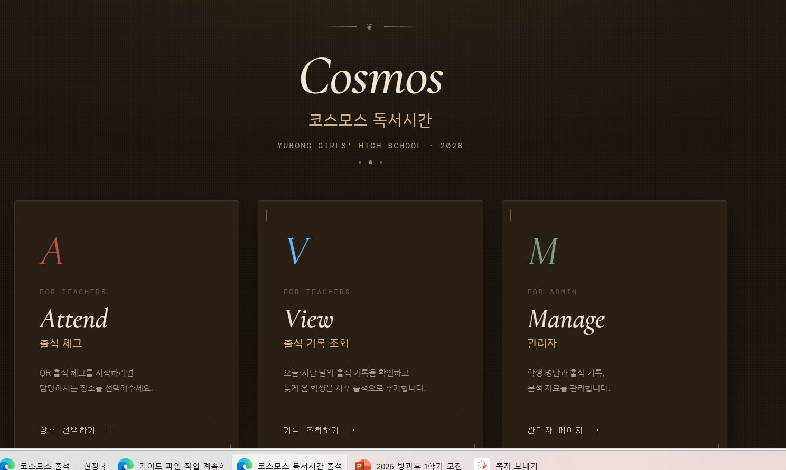
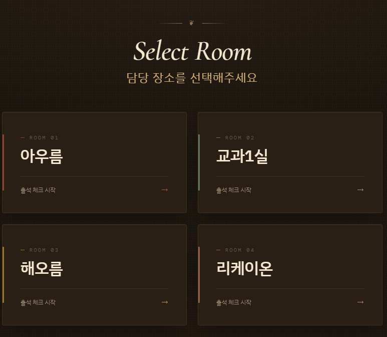

SECTION 01
시작하기 전에
이 시스템은 유봉여자고등학교의 코스모스 독서시간 출석을 QR 코드로 관리하는 웹 애플리케이션입니다. 교사가 QR 코드를 생성해 학생에게 보여주면, 학생이 본인 휴대폰으로 스캔해 학번을 입력하는 방식으로 출석이 처리됩니다.
접속 주소
모든 사용자는 아래 주소로 접속합니다. 별도의 앱 설치나 로그인은 필요하지 않습니다.
https://kyh0175-afk.github.io/attendance/v2/

[이미지 01-a] 접속 직후 뜨는 메인 화면. 교사용 Attend(출석 체크)와 관리자용 Manage(관리자) 두 카드가 보입니다.

[이미지 01-b] 교사가 Attend 카드를 누르면 나오는 장소 선택 화면. 아우름 · 교과1실 · 해오름 · 리케이온 네 카드 중 본인 담당 장소를 선택합니다.
역할별 진입 방법
- 학생 — 교사가 보여주는 QR 코드를 휴대폰 카메라로 스캔하면 바로 출석 화면으로 이동합니다. 직접 주소를 입력할 필요는 없습니다.
- 교사 — 메인 화면에서 Attend(출석 체크) 카드를 누르고, 이어서 나오는 장소 선택 화면에서 본인이 담당하는 장소(아우름 · 교과1실 · 해오름 · 리케이온)를 선택합니다.
- 관리자 — 메인 화면에서 Manage(관리자) 카드를 눌러 관리자 페이지로 이동합니다.
운영 중인 프로그램
- 방과후 독서시간 — 평일 16:30 ~ 18:20 · 아우름 / 교과1실 / 해오름
- 야간 독서시간 — 평일 19:20 ~ 21:30 · 아우름 / 교과1실 / 해오름
- 심야 독서시간 — 평일 21:30 ~ 23:00 · 리케이온
- 토요일 독서시간 — 오전 08:30 ~ 12:30 / 오후 13:30 ~ 17:30 · 리케이온
- 일요일 독서시간 — 오후 13:30 ~ 17:30 · 리케이온
💡 쌍둥이 장소 운영
아우름과 교과1실은 실질적으로 같은 공간으로 통합 운영됩니다. 교사 한 분이 양쪽을 동시에 관리하며, 학생은 어느 쪽 QR 코드를 스캔해도 같은 출석 시간에 기록됩니다.
SECTION 02
학생용 — 출석하기
QR 코드로 출석하기
1
교사가 보여주는 QR 코드를 휴대폰 카메라 앱으로 스캔합니다. 별도의 QR 스캐너 앱은 필요하지 않습니다.
2
스캔 후 뜨는 링크를 눌러 출석 화면으로 이동합니다.
4
"환영합니다, ○○○님" 화면이 뜨면 출석이 완료된 것입니다. 이 화면이 뜨지 않으면 출석이 처리되지 않은 것이니 교사에게 알려주세요.
[이미지 02] 학생 출석 화면 — 학번 입력
QR 스캔 직후 학생이 보는 화면. 상단에 프로그램명·장소·교사 이름이 보이고, 중앙에 5자리 학번을 입력하는 숫자 키패드가 있는 상태.
[이미지 03] 학생 출석 완료 화면
출석 처리된 후 뜨는 환영 메시지 화면. "환영합니다, ○○○님" 같은 문구와 출석 시각이 보이는 상태.
⚠ QR 코드 유효 시간
QR 코드는 생성 후
20분 동안만 사용할 수 있습니다. 20분이 지나면 교사가 새 QR 코드를 만들거나 연장해야 합니다. 출석 화면에서 "이 시간은 이미 마감됐어요" 같은 메시지가 나오면 교사에게 알려 새 QR 코드를 받으세요.
내 출석 기록 확인하기
본인의 지난 출석 기록을 직접 확인할 수 있습니다.
1
접속 주소로 이동합니다. (https://kyh0175-afk.github.io/attendance/v2/)
2
메인 화면에서 "내 출석 확인" 버튼을 누릅니다.
3
학번 5자리를 입력하면 본인의 최근 출석 기록이 날짜별로 표시됩니다.
[이미지 04] 학생 출석 조회 화면
학번 입력 후 뜨는 본인의 출석 기록 목록. 날짜·프로그램·상태(출석/미출석)가 리스트로 보이는 상태.
출석 기록이 이상할 때
본인 출석 조회 화면에서 기록이 잘못되어 있으면 수정 요청을 보낼 수 있습니다.
1
내 출석 기록에서 수정을 원하는 날짜의 항목을 누릅니다.
2
변경할 출석 상태(출석/결석/자율 등)를 고르고, 사유를 간단히 적습니다.
3
"요청 보내기"를 누르면 관리자에게 요청이 전달됩니다. 관리자가 승인해야 기록이 변경됩니다.
[이미지 05] 출석 수정 요청 화면
특정 날짜 기록을 눌렀을 때 뜨는 수정 요청 폼. 상태 선택 옵션과 사유 입력란이 있는 상태.
SECTION 03
교사·관리자용 — 출석 받기
교사 화면에서는 QR 코드를 생성해 학생 출석을 받고, 실시간으로 출석 현황을 확인하며, 필요 시 직접 학번을 입력해 출석을 추가할 수 있습니다.
출석 시간 시작하기
1
메인 화면에서 본인이 담당하는 장소 카드(아우름·교과1실·해오름·리케이온)를 선택합니다.
[이미지 06] 교사 화면 — 설정 단계
장소 진입 직후 화면. 상단에 장소명, 중앙에 "프로그램 선택" 드롭다운과 "담당 교사 이름" 입력란, 아래에 "QR 생성 및 출석 시작" 버튼이 있는 상태.
2
프로그램을 선택합니다. (심야 · 야간 · 방과후 · 토요일 · 일요일 독서시간) 리케이온이 아닌 장소에서는 심야/토요일/일요일 옵션이 보이지 않습니다.
3
담당 교사 이름을 입력합니다. 아우름 + 교과1실 통합 운영일 때는 생략할 수 있습니다.
4
"QR 생성 및 출석 시작" 버튼을 누릅니다.
[이미지 07] 교사 화면 — QR 코드 표시
출석 시간 시작 후 뜨는 화면. 중앙에 큰 QR 코드, 상단에 프로그램·장소·교사 정보, 우측에 남은 시간 카운트다운, 아래에 출석 학생 명단이 있는 상태.
심야 감독 교사 자동 채움
리케이온에서 심야 독서시간을 선택하면 그날의 심야 감독 교사 이름이 자동으로 입력됩니다. 이 정보는 미리 등록해둔 감독표에서 가져옵니다.
[이미지 08] 심야 감독 자동 채움 상태
리케이온 + 심야 독서시간 선택 시 교사 이름 칸에 자동으로 이름이 들어가 있고, 그 아래에 "⚠️ 오늘의 심야 감독으로 자동 입력됨 — 다르면 직접 수정하세요" 안내가 보이는 상태.
⚠ 반드시 확인하세요
자동 채움은 감독표 기준이라 실제 감독자와 다를 수 있습니다. 시작 버튼을 누르기 전 반드시 본인 이름이 맞는지 확인하고, 다르면 직접 지우고 올바른 이름을 입력하세요.
자동 채움이 틀린 채로 출석 시간을 시작해버렸다면, 나중에 관리자 페이지의 출석 기록 탭에서 수정할 수 있습니다. (해당 세션 선택 후 교사 이름 옆 연필 아이콘 클릭)
학생 출석 현황 보기
QR 코드가 표시된 화면에서 학생이 출석할 때마다 실시간으로 명단이 갱신됩니다. 전체 / 출석 / 미출석 탭으로 구분해 볼 수 있습니다.
[이미지 09] 출석 명단 영역
교사 화면 하단의 학생 명단. "전체 / 출석 / 미출석" 탭이 있고, 학생 한 명씩 체크 표시(출석) 또는 회색 점(미출석) 아이콘과 함께 학번·이름이 보이는 상태. 아우름+교과1실 통합일 때는 학생 이름 옆에 장소 태그가 붙은 상태.
💡 실시간 갱신
학생이 QR을 스캔해 학번을 입력하면 교사 화면에 즉시 반영됩니다. 네트워크 문제로 반영이 늦어도 최대 3초 이내에 자동으로 새로고침됩니다. 수동 새로고침은 불필요합니다.
학번으로 직접 출석 추가
학생의 휴대폰이 없거나 QR 스캔이 안 되는 경우, 교사가 직접 학번을 입력해 출석을 추가할 수 있습니다.
1
QR 코드 화면 오른쪽의 "직접 출석 추가" 버튼을 누릅니다.
2
숫자 키패드가 뜨면 학번 5자리를 입력합니다.
3
입력이 완료되면 해당 학생이 명단에 추가됩니다.
[이미지 10] 직접 출석 추가 키패드
"직접 출석 추가" 버튼 클릭 시 뜨는 숫자 키패드 모달. 0~9 숫자 버튼과 학번 표시 영역이 있는 상태.
QR 시간이 끝났을 때 — 연장 안내 창
QR 코드 유효 시간 20분이 지나면 자동으로 연장 안내 창이 뜹니다. 이 창이 뜨는 동안 학생은 임시로 출석을 할 수 없으며, 교사의 선택을 기다립니다.
[이미지 11] 연장 안내 창
"QR 시간이 만료됐어요" 제목과 함께 중앙에 큰 카운트다운(5:00부터 감소), 아래에 "세션 마감" 과 "+ 10분 연장" 두 버튼이 있는 상태.
1
창 중앙에 5분 카운트다운이 시작됩니다. 이 시간 안에 선택해야 합니다.
2
아직 올 학생이 더 있으면 "+ 10분 연장" 버튼을 누릅니다. QR이 다시 활성화되고 학생이 계속 출석할 수 있습니다. 연장은 1회만 가능합니다.
3
더 받을 학생이 없으면 "세션 마감" 버튼을 누릅니다. 출석 시간이 완전히 종료되고 메인 화면으로 돌아갑니다.
⏰ 5분 안에 선택하지 않으면
5분 카운트다운이 끝날 때까지 아무 버튼도 누르지 않으면
자동으로 세션이 마감되고 메인 화면으로 이동합니다. 자리를 비웠거나 창을 닫아도 안전하게 정리됩니다.
💡 연장 후 두 번째 만료
이미 한 번 연장한 뒤 또 20분이 지나면 연장 안내 창이 다시 뜨지만, 이번에는 "+ 10분 연장" 버튼이
회색으로 비활성화됩니다. 이제는 "세션 마감"만 누를 수 있고, 5분 뒤 자동 마감됩니다.
출석 시간 마감하기
수업이 끝났거나 모든 학생이 출석을 마쳤으면 직접 출석 시간을 마감할 수 있습니다. 굳이 20분을 다 기다릴 필요는 없습니다.
1
QR 코드 화면에서 "출석 마감" 버튼을 누릅니다.
2
확인 창에서 "마감"을 한 번 더 누릅니다.
3
출석 현황 요약이 간단히 표시된 후 메인 화면으로 돌아갑니다.
[이미지 12] 출석 마감 확인 창
"출석 마감" 버튼 클릭 시 뜨는 확인 모달. "정말 마감할까요?" 같은 문구와 취소/마감 두 버튼이 있는 상태.
지난 시간에 나중에 출석 추가하기
수업이 끝난 뒤에 뒤늦게 온 학생이나 QR 스캔 실패로 출석이 안 된 학생을 나중에 추가할 수 있습니다. 이를 사후 출석이라고 합니다.
1
메인 화면에서 본인 장소를 선택해 교사 화면으로 이동합니다.
2
설정 화면 아래쪽의 "오늘 마감된 시간 — 사후 출석" 영역에서 해당 출석 시간 카드의 "사후 출석 추가" 버튼을 누릅니다.
3
숫자 키패드로 학번을 입력하면 해당 학생이 사후 출석으로 추가됩니다.
[이미지 13] 오늘 마감된 시간 카드
교사 화면 아래쪽 "오늘 마감된 시간 · 사후 출석" 섹션. 오늘 이미 끝난 출석 시간 카드 목록이 나오고 각 카드에 "사후 출석 추가" 버튼이 있는 상태.
✓ 사후 출석은 명단에 표시됩니다
사후로 추가된 학생은 출석 기록에서
"사후" 라벨로 구분됩니다. 정상 출석과 혼동되지 않게 관리됩니다.
SECTION 04
관리자 페이지
관리자 페이지는 명단·기록·분석·요청 등 전반적인 운영을 처리하는 곳입니다. 메인 화면 우측 상단의 관리자 페이지 버튼으로 이동할 수 있습니다. 왼쪽 사이드바에서 탭을 전환하며 사용합니다.
[이미지 14] 관리자 페이지 전체 레이아웃
좌측에 세로 사이드바(Cosmos 로고 + 6개 메뉴: S 명단 관리 / H 출석 기록 / A 분석 / R 요청 관리 / L 실시간 / D 진단)와 우측 메인 콘텐츠 영역이 있는 전체 화면.
명단 관리
학생 명단을 추가·수정·삭제하고, 엑셀 파일로 일괄 업로드할 수 있습니다.
[이미지 15] 명단 관리 탭
프로그램·장소·학년·활성 상태 필터가 상단에 있고, 그 아래에 학번·이름·프로그램·장소·출석 요일·상태 열로 구성된 학생 목록 테이블이 있는 상태.
학생 개별 추가 · 수정
- 우측 상단 "+ 학생 추가" 버튼으로 한 명씩 추가할 수 있습니다.
- 학생 행을 누르면 수정 모달이 떠서 이름·프로그램·장소·출석 요일 등을 변경할 수 있습니다.
엑셀로 일괄 업로드
1
"양식 다운로드" 버튼으로 템플릿 엑셀 파일을 받습니다.
2
엑셀에서 학생 정보(학번·이름·프로그램·장소·출석 요일)를 입력·수정합니다.
3
"엑셀 업로드" 버튼으로 파일을 올립니다.
✓ 비파괴 업로드
엑셀에 있는 학생은 추가되거나 정보가 갱신됩니다. 엑셀에 없는 기존 학생은
그대로 유지됩니다. 부분 업데이트할 때 다른 학생이 사라질 걱정은 없습니다.
출석 기록
지난 출석 시간의 기록을 날짜별로 조회하고, 학생별 출석 상태를 확인할 수 있습니다.
[이미지 16] 출석 기록 탭 전체
좌측에 날짜별 출석 시간 카드 목록(기간·프로그램·장소 필터), 우측에 선택된 출석 시간의 상세 정보(전체 학생 수, 출석/미출석 수, 출석률, 학생 명단)가 있는 2열 레이아웃.
- 좌측 목록에서 필터로 기간·프로그램·장소를 좁힐 수 있습니다.
- 카드를 누르면 우측에 해당 출석 시간의 상세 명단이 보입니다. 쌍둥이 장소는 아우름/교과1실 섹션으로 구분되어 표시됩니다.
- 출석 시간 제목 옆의 연필 아이콘을 누르면 담당 교사 이름을 수정할 수 있습니다. (심야 자동 채움이 틀린 경우 등)
- "+ 사후 출석 추가" 버튼으로 해당 출석 시간에 학생을 추가할 수 있습니다.
- 개별 학생 행의 "삭제" 버튼으로 잘못된 출석 기록을 제거할 수 있습니다.
분석
기간별 출석률, 프로그램별 통계, 학생별 출석 횟수 등을 한눈에 볼 수 있습니다.
[이미지 17] 분석 탭
프로그램별·장소별 출석률 요약 카드와 기간별 출석 추이 그래프가 있는 상태.
요청 관리
학생이 보낸 출석 수정 요청이나 출석 요일 변경 요청을 확인하고 승인·반려할 수 있습니다.
[이미지 18] 요청 관리 탭
대기 중 / 처리됨 탭으로 나뉘어 학생이 보낸 요청 목록이 표시되고, 각 요청에 "승인" / "반려" 버튼이 있는 상태.
1
요청 카드에서 학생 정보와 요청 사유를 확인합니다.
2
"승인" 또는 "반려"를 누릅니다. 승인 시 출석 기록이 즉시 변경됩니다.
실시간
지금 이 순간 운영 중인 네 장소의 출석 현황을 한 화면에서 볼 수 있습니다. 학생 문의가 왔을 때 ("저 출석이 안 됐어요") 빠르게 확인할 때 쓰세요.
[이미지 19] 실시간 탭
아우름 · 교과1실 · 해오름 · 리케이온 네 장소의 카드가 가로로 배치되고, 각 카드에 현재 출석 시간·출석 인원·학생 명단이 보이는 상태. 상단에 학번 검색 박스가 있음.
- 각 장소 카드는 현재 활성화된 출석 시간이 있을 때만 정보를 표시합니다.
- 상단의 학번 검색에 5자리를 입력하면 해당 학생이 오늘 어디에 출석했는지 바로 확인할 수 있습니다.
진단
오늘 예정된 출석 시간이 모두 정상적으로 생성됐는지 확인하고, 교사 기기에서 발생한 이벤트 로그를 조회할 수 있습니다. 이 탭은 운영 중 문제가 생겼는지 조기에 발견하는 데 가장 중요합니다.
[이미지 20] 진단 탭
상단에 "오늘의 세션 현황" 카드 그리드(각 프로그램별로 녹색/amber/빨강/회색 상태 표시), 하단에 장소·이벤트 필터가 있는 최근 교사 기기 로그 테이블이 있는 상태.
오늘의 세션 현황
각 프로그램별로 예정된 출석 시간이 실제로 생성됐는지를 색상으로 한눈에 보여줍니다.
- 녹색 — 정상 진행 중 / 운영 완료. 출석 시간이 잘 만들어져 동작 중이거나 이미 잘 마무리됐습니다.
- amber — 마감됨. 운영 시간 안에 출석 시간이 만들어졌다가 정상적으로 마감됐습니다.
- 빨강 — 세션 미생성. 예정 시각이 지났는데 해당 출석 시간이 아직 만들어지지 않았습니다. 즉시 담당 교사에게 확인하세요.
- 회색 — 예정. 아직 시작 시각 전입니다.
최근 교사 기기 로그
교사 기기에서 발생한 주요 이벤트(페이지 진입·프로그램 선택·세션 생성·만료·연장·종료 등)를 시각 순으로 볼 수 있습니다. 장소별·이벤트 유형별로 필터링할 수 있습니다.
- 에러만 필터 — 실패 이벤트(
*_fail)만 표시
- 세션 관련 필터 — 세션 시작·생성·만료·연장·종료 이벤트만 표시
- 감독 자동 채움 필터 — 심야 감독 자동 채움 관련 이벤트만 표시
SECTION 05
일상 운영 체크리스트
매일 반복되는 기본 루틴입니다. 특히 관리자는 각 프로그램 시작 5~10분 후 진단 탭을 한 번씩 열어보는 습관을 들이면 대부분의 문제를 조기에 발견할 수 있습니다.
교사 일상 루틴
1
담당 시간 시작 5분 전: 메인 → 장소 선택 → 프로그램·교사 이름 확인
2
시작 시각: "QR 생성 및 출석 시작" 버튼 누르기
3
운영 중: 출석 명단 확인 + 필요 시 직접 출석 추가
4
20분 후 연장 안내 창이 뜨면 연장 / 마감 선택
5
수업이 끝나면 "출석 마감" 버튼으로 정리
관리자 일상 루틴
1
16:35 경: 진단 탭 열어서 방과후 독서시간 세션 상태 확인 (빨강 없는지)
2
19:25 경: 진단 탭으로 야간 독서시간 세션 상태 확인
3
21:35 경: 진단 탭으로 심야 독서시간 세션 상태 확인
4
수시: 학생 수정 요청이 오면 요청 관리 탭에서 처리
5
학생 문의 있을 때: 실시간 탭에서 학번 검색으로 확인
⚠ 빨강 카드가 뜨면
진단 탭에
빨강 카드(세션 미생성)가 보이면 해당 장소 담당 교사에게 즉시 연락하세요. 시작 버튼을 잊었을 가능성이 큽니다. 교사가 뒤늦게라도 시작하면 남은 학생들은 정상 출석 가능하고, 이미 오간 학생은 관리자가
사후 출석으로 처리할 수 있습니다.